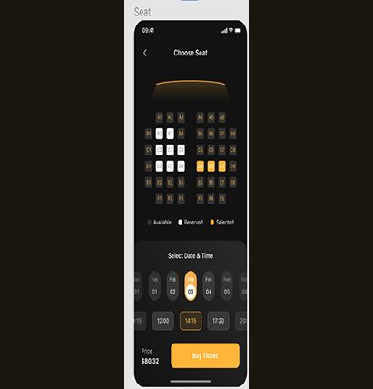

Mobile UX
Cinema Seat Reservation
Movie ticket apps make seat selection feel harder than it needs to. This one was about fixing that.
Role
UX Designer
Team
Solo
Duration
8 months, 2024
Tools
Figma, interactive prototyping
The Challenge
Booking a movie took too long. Finding a featured film was slow, seat context was missing, and group bookings with split payment were clunky.
My Approach
Ran interviews, surveys, and two rounds of usability testing across paper and interactive prototypes, building a persona and competitive audit from the findings.
The Result
A full interactive prototype covering discovery through checkout, with movie discovery surfaced up front and seat costs shown before payment.
My Contribution
Solo project across 8 months. I did the research, personas, journey mapping, competitive audit, wireframes, prototypes, and both testing rounds.

The Problem
- Seat preferences: users wanted control over proximity to the screen or exit, not just a generic seat map
- Viewing angle, especially for premium formats like IMAX or 3D, was a real concern with no way to preview it
- Group bookings were a pain point, since reserving adjacent seats and splitting payment across friends was clunky
- Data privacy and security concerns affected trust, especially around payment information
Process
- User research through interviews, surveys, and usability testing, then built a persona (Asif) and problem statement from it
- Mapped the user journey and goal statement, then ran a competitive audit of existing booking apps
- Paper wireframes digital wireframes low-fidelity prototype usability studies interactive Figma prototype
Key Solutions
- Interactive theater map with clear seat availability, pricing tiers, and viewing recommendations
- One-screen checkout with saved payment methods and minimal form fields
- Optimized for one-handed use with large touch targets and responsive design
Persona: Asif
- Problem statement: Asif struggles with the time-consuming process of finding featured movies, hindering his ability to quickly plan a movie night with friends
- Design response: the first screen never forces an email signup. It generates a random display name, with an optional name and email for a faster payment process later
Putting it in front of people
Round 1 Findings
- Users need better navigation to select movies
- Users need a location option to view schedules in other cities
- Users need clearer instructions for navigating through the app
Round 2 Findings
- Users want to know which movie theater company they're booking with
- Users want choosing a date and time to be easier
- Users want the payment method to be quick and easy
What testing changed
Surfacing Movies Faster
Added three of the top movies now showing plus a list of upcoming releases, directly addressing the Round 1 finding that movie discovery took too long.
Simplifying Date, Time & Price
Made choosing a date and time easier and showed the total cost for selected seats before checkout, so there were no surprises at payment, directly addressing Round 2 feedback.
Accessibility Considerations
- Clear navigation and simple booking options throughout, not just on the happy path
- A reliable notification system alerts customers to reservation changes and upcoming appointments
- Tickets are fully digital. Scan and go, with the seat and row clearly on the ticket, no paper needed
Takeaways
- Impact: user feedback was positive, with many finding the app intuitive and easy to use
- What I learned: the real importance of user research in shaping design decisions, and stronger Figma skills for wireframing and prototyping
What I'd do next
Improve navigation and simplify the payment process further based on user feedback, implement stronger data privacy measures to build user trust, and conduct further usability testing to make sure every feature holds up for real users, not just the happy path.
What the research told me
What interviews, surveys, and usability testing kept surfacing.
Insight 01
Discovery was the bottleneck
Asif's core problem wasn't the seat map, it was that finding featured movies took too long to plan a night out.
Insight 02
Seat context matters
Users wanted proximity to screen and exit, and a way to preview viewing angle for premium formats like IMAX.
Insight 03
Group booking was clunky
Reserving adjacent seats and splitting payment across friends was a recurring pain point.
How people move through it
The full booking journey the prototype covers.
Current Path
- Open app hunt for a featured movie pick a showtime pick seats without knowing the cost forced signup pay
Redesigned Path
- Open app top movies and upcoming releases surfaced immediately pick date and time in one step see seat cost before checkout optional signup with a randomized display name pay
How the design changed
Paper digital wireframes low-fidelity prototype two usability rounds high-fidelity prototype.
After Round 1
- Added three top movies now showing plus a list of upcoming releases, so discovery no longer required hunting
- Added a location option to view schedules in other cities
After Round 2
- Made choosing a date and time a single, easier step
- Showed the total cost for selected seats before checkout, so there were no surprises at payment
Designing for everyone
Documented considerations from the original case study.
What Was Built In
- Clear navigation and simple booking options throughout, not just on the happy path
- A reliable notification system alerts customers to reservation changes and upcoming appointments
- Tickets are fully digital, scan and go, with seat and row clearly on the ticket, no paper needed
What came out of it
A full interactive Figma prototype covering the entire booking flow, from movie discovery through seat selection to checkout confirmation, built and refined across 8 months of research, wireframing, and two rounds of usability testing.
What I learned
Seat selection looks like a simple UI problem until you actually map out every state a seat can be in: available, held, sold, accessible-only, or part of a group booking. Most of the design time went into the theater map itself, not the checkout flow I originally assumed would be the hard part.